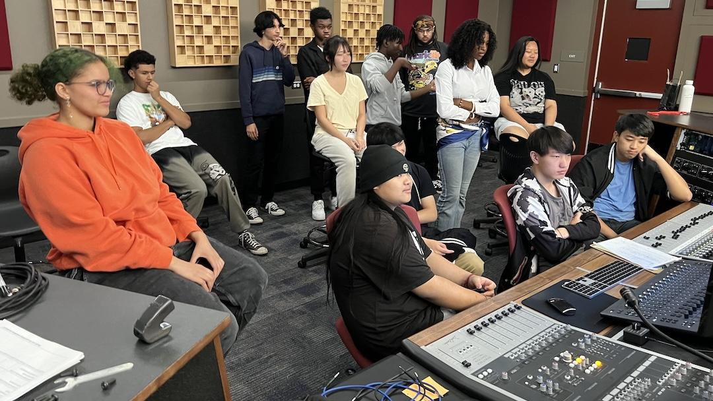

Facility Profile
Professional Environment

Our studio is centered around the Audient Heritage Edition console in a double-producer desk configuration. This setup provides 24 tracks on the left-hand side with a comprehensive mastering section on the right.
